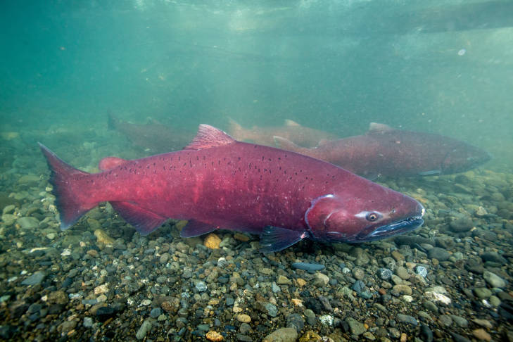

The Pacific Northwest is home to many endangered and threatened species. From the Sandhill Crane to the Oregon Spotted Frog, countless species are currently facing extinction. Increasing human actions such as poaching, greenhouse gas emissions, habitat destruction and disruption, and more increase the inevitability of losing the many precious species. It is vital that this rising issue is brought to attention, and that steps are immediately taken to combat this crisis.
Marine wildlife has been on a heavy decline as marine debris, overfishing, and hunting has increased leading to suffering marine ecosystems. Below are some specific examples:
| Chinook Salmon | Chinook salmon populations have been on an intense decline since the late 1900's as rates
overfishing,
habitat loss and destruction, and climate change has risen.
 |
| Puget Sound Orcas | |
| Marine Debris |